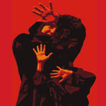

|
|
زنی که بخشید آرامش یافت/ اعدام بس
جمعه8 آبان 1388
تغییر برای برابری- مریم مالک :
نشست ماهانه انجمن حمایت از حقوق کودکان با موضوع "اعدام بس" در فرهنگسرای مدرسه واقع در پارک اندیشه برگزار شد. در این نشست سخنرانانی از جمله دکتر حبیب جباری جامعه شناس و عضو هئیت مدیره انجمن، محبوبه عسگری مدیر دفتر انجمن حمایت از حقوق کودکان، ثریا عزیز پناه عضو هئیت مدیره انجمن، محمد مصطفایی وکیل دادگستری، دکتر شیوا دولت ابادی روانشناس ، سپیده یوسف زاده کارشناس امور اجتماعی کودکان حضور داشتند. خانم شجاعی یکی از اقوام بهنود شجاعی و خانم رمضانی زنی که باعث نجات سینا پایمرد از اعدام شده بود نیز از چگونگی ماجرایی که بر آنها گذشته بود صحبت کردند.

در ابتدای نشست خانم محبوبه عسگری مدیر دفتر انجمن حمایت از حقوق کودکان گزارش ماهانه انجمن را خواندند. در این گزارش فعالیت های ابان ماه انجمن در رابطه با برگزاری نشست مطبوعاتی و کارگاههای آموزشی که برگزار شده بود ارائه گردید.
ثریا عزیز پناه با اشاره به شرایط نابه سامان کودکانی که قربانی شرایط اجتماعی هستند گفت: " متاسفانه به تازگی اعدام بهنود شجاعی را مشاهده کردیم، نوجوانی که در سن 17 سالگی مرتکب قتل شده بود و علیرغم تلاشهای زیاد برای جلوگیری از اجرای قصاص او پیگیری ها نتیجه نداد".
وی از حاضرین خواست یه دقیقه به یاد بهنود شجاعی و دیگر عزیزان از دست درفته سکوت کنند.
سپس از یکی از بستگان بهنود شجاعی دعوت شد تا درباره بهنود صحبت کند.
خانم شجاعی یکی از بستگان بهنود شجاعی با ابراز تاسف شدید از این حادثه از آقای محمد مصطفایی وکیل بهنود شجاعی تشکر کرد و گفت: " نمی دانم راجع به چه چیزی صحبت کنم از بچگی بهنود بگویم یا در مورد از دست دادن مادرش در کودکی بگویم یا از تنهایی بهنود، با مادر بزرگ 80 ساله اش زندگی می کرد. تنها یک اشتباه بود، واقعا ما هیچ کدام در زندگی خودمان اشتباه نمی کنیم؟ هر لحظه ممکن است اتفاقی بیافتد هیچ کس نمی تواند پیش بینی کند. در این بین خانواده مقتول هم قربانی شدند. از نظر روانی مادری که چهارپایه را از زیر پای بهنود کشید همیشه دچار مشکل خواهد بود. چند وقت پیش صحبتی را از خانم فردوسی پور در تلویزیون شنیدم، خیلی ناراحت شدم، این خانم قضیه را راحت در مورد اصلاح اجتماع با اعدام مطرح کرد. آیا با حذف فیزیکی آدمها جامعه اصلاح می شود؟ بچه ای که 17 ساله اش نشده بود آیا هیجانات آن سن را می توانست کنترل کند؟ بخصوص وقتی که مادری نداشته باشی تا سرت را روی پای آن بگذاری و بخواهی دردت را به او بگویی؟ احساس و باور خودم را می خواهم بگویم آیا غیر از این هست که یک قصاص انجام دادیم بهنود در برابر احسان رفت آن چهار سالی که بهنود در زندان رنج کشید و کتک خورد ، 5 بار پای چوبه ی دار رفت را باید به کجا ببریم؟ اصلاح و تربیت بچه هایمان چه می شود؟ آیا با حذف، تمام مسائل ما حل می شود؟ به هر حال بهنود پرونده اش بسته شده اما صدها نفر پرونده شان بسته نشده چه باید کرد؟ مادر بزرگ و پدر بهنود هوش و حواس درستی ندارند آن خانواده هم همین مشکل را دارند آیا با حذف بهنود معضل اجتماع حل شد؟ آیا بهنود با آن فردی که عمدا و از نقشه از قبل تعیین شده کسی را می کشد فرقی نداشت؟ آیا برای بچه 17 ساله مردن مفهومی دارد؟ امیدوارم روزی را ببینم که شاهد یک چنین اتفاقی نباشم.
محمد مصطفایی وکیل دادگستری ، وکیل بهنود شجاعی ،دیگر سخنران نشست با موضوع " نگاهی از منظر قوانین به مسئله اعدام کودکان" بودند، وی با تشکر از انجمن حمایت از حقوق کودک برای برگزاری چنین نشست هایی گفت: " در نشریات و مطبوعات و جاهای مختلف بارها اعلام کردم که اعدام افراد زیر 18 سال بر خلاف قانون هست و غیر قانونی است واین چیزی است که مجلس شورای اسلامی تصویب کرده است. چون صحبت از بهنود شد و این نوجوانی که ناجوانمردانه اعدام شد صحبت می کنم، بهنود جاودانه شد تا به حال ندیدم و نشنیدم که مجلس ترحیم برای یک نفری که اعدام شده است گرفته شود. مشخص نبود که این قتل را انجام داده است یا نه اما محکوم به اعدام شده است. بهنود جوان خیلی مظلوم و کم حرفی بود و در زندان هم همه از بهنود راضی بودند ماجرا را برایم تعریف کرد و گفت من واقعا نفهمیدم چه شد، افراد دیگر هم در نزاع بودند و وقتی که به مادرم فحش و ناسزا گفت من با شیشه ای که دستم بود به سمتش رفتم.
پیگیری های زیادی انجام دادیم و به این نتیجه رسیدم که این شخص قتل انجام نداده و به فرض هم که انجام داده این نوجوان کمتر از 18 سال نباید به مجازات اعدام محکوم کنند. در سال 1372 کنفوانسیون حقوق کودک در مجلس به تصویب رسید و اعلام کردند موادی که خلاف شرع باشد انجام نمی گیرد. از هنرمندان کمک گرفتیم تا رضایت اولیای دم را جلب کنیم با آقای انتظامی و آقای پرویز پرستویی و خانم مهتاب کرامتی صحبت کردیم. آقای انتظامی از 9 شب تا 3 نیمه شب با آن خانواده صحبت کردند، خانواده مقتول اعلام کردند ما گذشت کردیم، در آن جلسه از دیه صحبت نکردند ولی بعد عنوان کردند 500 میلیون تومان دیه می خواهند. خانواده بهنود از کجا می توانستند این پول را تهیه کنند، حسابی افتتاح شد و اعلام کردند کسانی که تمایل دارند برای جمع آوری دیه می توانند به این شماره حساب پول واریز کنند، اما چند روز بعد حساب مسدود شد و آقای انتظامی و چند نفر دیگررا به دادسرا دعوت کردن و بعد از مدتی از اتهاماتی که به آنها زده شد بری شدند. من استشهادی تهیه کردم و لایحه ای نوشتم و به مواد قانونی استناد کردم و حتی از چندین فقیه فتوا گرفتیم و آقایان مرحوم آیت اله بهجت، آیت الله اردبیلی و آیت اله مکارم صراحتا اعلام کردند اصلا نباید قصاص صورت بگیرد و به شعبه 74 کیفری استان دادم به آقای تردست و همان روز اجرای احکام پرونده را بردند شعبه و دو روز بعد گفتند این درخواست رد شد. ما از طریق بهنود فریادهای خودمان را زدیم ولی دستگاه قضایی دوست داشت بهنود اعدام شود و پا به پای خانواده مقتول جلو رفت. وقتی که بهنود التماس می کرد که او را ببخشند و به مادر احسان التماس می کرد برایش مادری کند واقعا چنین مادر سنگدلی چطور دلش آمد چهارپایه را از زیر پاهای بهنود بکشد، برایم باور کردنی نبود. من همچنان تمام تلاشم را می کنم تا بتوانم عزیزانم را نجات دهم. "
سپیده یوسف زاده کارشناس امور اجتماعی کودکان،فعال حوزه کودکان در کشور افغانستان و یونیسف یکی از سخنرانان نشست بودند. با موضوع " اثرات فقر در تشدید خشونت" سخنرانی کردند،
وی گفت: " صدای بهنود را کم و بیش ما شنیدیم اما خیلی های دیگر ممکن است هرگز صدایشان شنیده نشود، در مورد سن قانونی کیفری بررسی هایی را انجام داده ام و از منظر قانونی به آن پرداختم، یکی از معضلات در بررسی ها تعارض قانون برای نوجوانان است، بررسی ها یک جانبه هست و کمتر مستند سازی داریم بررسی کند کودکی که برایش این اتفاق افتاده از چه خانواده ای می آید و چطوری بزرگ شده است.
عوامل محیطی، خانوادگی، خشونتی که در خانواده ممکن است باشد، عوامل اجتماعی و زیرساختها و یک سری هم عوامل فردی هستند که به سیستم رشدی نوجوانان برمیگردد در بحث خشونت تاثیر گذار هستند. در تمام دنیا چیزی وجود ندارد که تنها یکی از این عوامل می تواند نقش بیشتری داشته باشد، برای کودکانی که معارض با قانون هستند در کشور ما آمار دقیقی وجود ندارد تنها بهزیستی یک بانک اطلاعاتی دارد و نکته تلخ این بود که بچه های زیر شش سال در مراکز بهزیستی نگهداری می شوند و تا زیر 12 سال تعداد بچه های پذیرفته شده خیلی زیاد بودند. که شرایط نگهداری این کودکان شرایط و امکانات خاصی را می طلبد. ما باید عوامل افزایش این کودکان را در محیط اجتماعی هم بررسی کنیم. "
دکتر شیوا دولت ابادی روانشناس و یکی از فعالین انجمن حمایت از حقوق کودک نظر خود را در مورد یکی از برنامه های تلویزیونی در مورد اعدام را بیان کردند و گفتند:" آنچه که من دیدم واقعا تکان دهنده بود و باور نمی کردم یکی از همکاران ما این طور قضیه ای را توجیه کنند و این همکار ما هم احتمالا مسئولیتش این بوداز زاویه تخصصی خودش این قضیه را توجیه کند. در قانونی ترینو حقوقی ترین شکل قضیه وقتی مسئله اعدام را مطرح می کند می گوید ای کاش اصلا اعدام نباشد حالا اینکه اعمال می شود یک بحث دیگر است و اصل اعدام را ناحق می دانند و یک متخصص روانشناس باید خشونت خودش را در برابر اعدام اعلام کند و بعد اعلاک کند که خانواده حق داشته یا نباشد . از نظر فنی کاملا این نظریه را رد می کنم . خیلی پیش آمده که در رابطه با قضیه بلوغ که به عنوان سئوال مطرح می شود بحث هایی صورت گرفته تعاریف مختلفی وجود داشته است. اعدام یک مسئله خیلی جدی هست و مسئله دیگر ما تعریف ما از بلوغ هست و روانشناسی کاملا حرفهای دیگری برای فرایند بلوغ و روند بلوغ دارد . متاسفانه در دوران بلوغ به خاطر تغییرات هورمونی و تغییرات اجتماعی، کودکان بسیار آسیب پذیرتر هستند، فرصت به بچه ها برای یکپارچه شدن شخصیت شان نمی دهیم و برچسب آدم بزرگ به آنها می خورد. 20 سال پیش بحث رشد هیجانی مطرح شد و این بحث به روانشناسی اضافه شد ، مفهوم هوش هیجانی این بود که ما چقدر هیجانهایمان را می توانیم اداره کنیم؟
وقتی که جامعه ما از خشونت یک مقدار تصفیه کنیم و الگوی خشونت نباشد ، الگوی نرم انسانی باشد و تا زمانی که به بچه ها اجازه ندهیم خودشان را بشناسند و رفتارهای پرخطر را بشناسند، آدمی که هوش هیجانی دارد باید بداند که اینجا من نباید درگیر شوم همه اینها را باید به بچه ها یاد داد و بعد از آنها انتظار داشت تحت شرایط خشونت خودشان را کنترل کنند. وقتی اینها با هم درگیر شدند احسان هم می توانست قاتل باشد ، قتل غیر عمد اتفاق افتاده و چرا باید قصاص به این شکل باشد؟ انجمن حمایت از حقوق کودکان یکی از جاهایی است که باید همت مان را بگذاریم و جان بچه ها را نجات دهیم. "
خانم دولت آبادی مسئولیت کمیته ای که قرار است با خانواده های قربانیان از دو طرف در تماس باشند را قبول کردند.
دکتر حبیب جباری دکترای جامعه شناس و عضو هئیت مدیره انجمن حمایت از حقوق کودک با موضوع" بازتاب و پیامد اعدام کودکان در جامعه " گفت:
" در جامعه دو مسئله داریم خشونت به مفهوم عام و خشونت کودکان که نیازمند بررسی این تمایز هستیم و نگاههای متفاوتی وجود دارد. حوزه دوم حوزه اعدام هست پاسخ بزرگسالان به مقوله اعدام کودکان. آیا اعدام می تواند پاسخ درستی به این قضیه باشد؟ چرا اعدام مشروعیت پیدا می کند؟ آیا قتل قاتل مجرمانه نیست؟ کودکی که بر حسب یک اتفاق فردی را به قتل می رساند آیا می توانیم قاتل فرض کنیم؟ در سطح خرد ما خیلی روی مقوله خشونت جای بحث داریم، آموزش و پرورش به عنوان نهاد رسمی آموزش، چه فضایی را در جامعه فراهم کرده است؟ چقدر فرد گرایی و جمع گرایی را تعریف می کنیم؟ اینها همه تاثیر گذار هست و نهادهای مختلف می توانند بر این مقوله تاثیر گذار باشد. نگاه ما به خشونت متفاوت هست. کودک مطرح نیست طبیعتا افرادی هستند که آسیب پذیر هستند و نیازمند حمایت بزرگسالان هستند کودک همیشه به حاشیه رانده می شود اما در اعدام با بزرگسالان یکسان محسوب می شود. بخشی از نگاه ما به خشونت و برخورد حقوقی و پاسخی است که به مقوله خشونت هست. ما نگاهمان به خشونت نگاه حذف نیست نگاه جبرانی و پیشگیرانه هست. در جامعه قواعد و هنجارهایی را برای پاسخ به مسائل اجتماعی تعریف می کنیم و باید با توجه به شرایط روز باشد. "
خانم رمضانی زنی که باعث نجات سینا پایمرد از چوبه دار شده بود به سخنرانی پرداخت وی با تشریح چگونگی رضایت خود از اعدام قاتل برادرش و همچنین نجات سینا پایمرد از چوبه دار گفت: " وقتی آقای مصطفایی در مورد بهنود صحبت می کرد من نمی توانستم جلوی اشکهایم را بگیرم چرا که من از نزدیک شاهد چنین صحنه هایی بودم. سینا زمانی مرتکب قتل شده بود که سن پسر من را داشت و من او را با پسر خودم مقایسه می ردم و می گفتم ایا حق سینا مرگ بود؟ آرزوی من این هست که این لذتی که من از بخشش بردم را دیگران هم داشته باشند و به بچه های خودمان خشونت را یاد ندهیم و عشق و دوست داشتن را یاد دهیم و آرزو دارم هیچ اعدامی در ایران اتفاق نیافتد و هیچ قتلی انجام نشود."
در پایان دکتر حبیب جباری فراخوان حمایت عمومی برای پایان دادن به اعدام کودکان را خواندند و حمایت همگان را برای آن اعلام کردند.